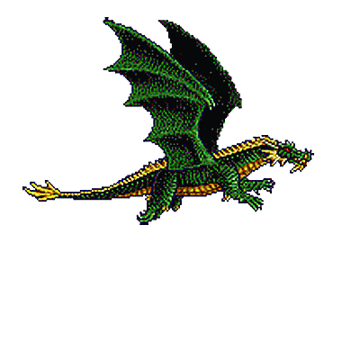

¿Qué sabemos del protagonista de la Diada? ⚔
San Jorge (Sant Jordi) fue un militar romano de origen griego que murió asesinado porque no quiso renegar de su fe ante el emperador romano Diocleciano el 23 de abril del año 303. La comunidad cristiana pronto lo empezó en venerar como mártir y destacó el honor, la fidelidad a las propias convicciones, la valentía, la fortaleza, la resistencia y la lucha contra el mal. Enseguida aparecieron historias fantásticas relacionadas, como la del caballero y el dragón.
¿Desde cuándo se celebra? 📅
En la edad media se extendió el culto a san Jorge y se le nombró patrón oficial de Cataluña en 1456. En el siglo XV se hacía la Feria de los Enamorados con paradas de rosas a la salida de la misa que se celebraba en el Palacio de la Generalitat. Sin embargo, fue con la Renaixença que se instauró como día patriótico, cívico y cultural.
¿Por qué se regalan libros? 📖
El día asociado al libro comenzó a celebrarse en 1926, después de que el escritor valenciano Vicent Clavel Andrés presentara esta celebración en la Cámara oficial del libro de Barcelona. En principio, la fiesta del libro se celebraba el 7 de octubre, y fue con la Exposición Universal de Barcelona de 1929 que los libreros lo pidieron y las fiestas se unificaron al 23 de abril, un día primaveral más adecuado para pasear por las calles.
¿Qué falsedad esconde la tradición? 🔎
A menudo se argumenta la elección del 23 de abril como fiesta del libro afirmando que los escritores Miguel de Cervantes y William Shakespeare murieron ese día. No es así. El día de la muerte de san Jorge no coincide ni con la de uno ni con la del otro. Realmente, ninguno de los dos murió ese día. Cervantes murió el 22 de abril de 1616 y el día 23 fue enterrado. Shakespeare murió el 23 de abril según el calendario juliano, una fecha que en realidad corresponde al 3 de mayo de 1616 en el calendario gregoriano, es decir, el que utilizamos en nuestro país.
¿De qué color debe ser la rosa? 🌹
Según la leyenda, de la sangre del dragón sale una rosa del color de la sangre y, por eso, la rosa roja es la propia del día, del color del amor y la pasión.
¿Qué significan los otros colores de la rosa? 💐
La rosa blanca representa la pureza y la inocencia, la rosa de color rosa inspira cordialidad, simpatía y belleza, y la amarilla tradicionalmente es la de la luz y la amistad. La naranja indica alegría y agradecimiento, la azul confianza y cariño y la verde esperanza y equilibrio. La negra comporta un mensaje de luto por una pérdida, dolor y eternidad.
¿Qué debe acompañar a la rosa? 🌾
La rosa nunca va sola, sino que lleva dos elementos más para conformar una triple simbología aparte del rojo de la pasión. Los otros elementos claves son la espiga de trigo, que simboliza la fertilidad, y la bandera, símbolo patriótico de catalanidad.
¿Qué alcance tiene la festividad? 🌍
Sant Jordi es Fiesta Nacional de Cataluña, pero la fiesta también se celebra en Aragón y las Islas Baleares, y está fuertemente arraigada en todos los territorios de habla catalana. Aparte, Sant Jordi es patrón de Inglaterra, Portugal, Georgia, Etiopía, Bulgaria y otros. Además, desde 1996 el 23 de abril es el Día Internacional del Libro decretado por la Unesco.
¿En qué pueblo la fiesta dura diez días? 🏡
La leyenda de Sant Jordi tiene muchas variantes, como la de Montblanc. Cuentan que fue en esa localidad donde el caballero mató al dragón rescatando al pueblo y a la princesa. Por eso hacen durar la festividad diez días con la Semana Medieval, que celebran desde hace un tercio de siglo con correfocs, mercados, cultura y espectáculos para todos los públicos.
¿Cuál es el edificio más sanjordiano? 🏰
Gaudí era un apasionado de la leyenda de Sant Jordi y por eso la plasmó en varias de sus construcciones. Pero, sobre todo en una. En la casa Batlló los balcones y las columnas representan los huesos y calaveras de las víctimas del dragón. El dragón aparece en las tejas, la lanza del caballero en la cruz de cuatro brazos y en la princesa en el balcón más elevado con forma de rosa.
